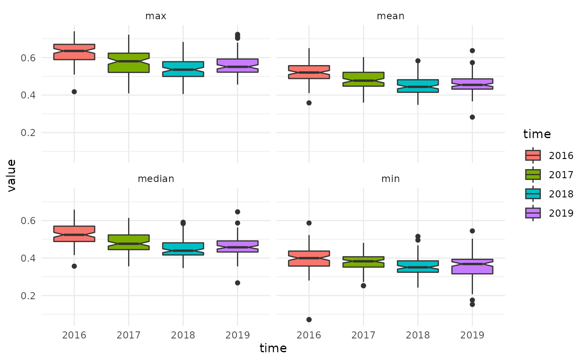

E03-zonalstats.Rmd
library(mapme.vegetation)
library(sf)
#> Linking to GEOS 3.8.0, GDAL 3.0.4, PROJ 6.3.1
library(ggplot2)
library(rgdal)
#> Loading required package: sp
#> rgdal: version: 1.5-23, (SVN revision 1121)
#> Geospatial Data Abstraction Library extensions to R successfully loaded
#> Loaded GDAL runtime: GDAL 3.0.4, released 2020/01/28
#> Path to GDAL shared files: /usr/share/gdal
#> GDAL binary built with GEOS: TRUE
#> Loaded PROJ runtime: Rel. 6.3.1, February 10th, 2020, [PJ_VERSION: 631]
#> Path to PROJ shared files: /usr/share/proj
#> Linking to sp version:1.4-5
#> To mute warnings of possible GDAL/OSR exportToProj4() degradation,
#> use options("rgdal_show_exportToProj4_warnings"="none") before loading rgdal.This article explains how we can extract a number of zonal statistics for pre-processed vegetation indices as explained in the article on the calculation of indices. We assume here that we calculated yearly NDVI raster files found in the current directory and we are extracting zonal statistics for polygons found in an sf object. Make sure that the sf object is in the same CRS as the raster files. We add an ID column to the object so to make sure we can link the resulting data to the original data. This is because any additional attributes will be dropped when calling the zonal statistics function.
The code for the extraction looks like this:
aoi = st_read(system.file("extdata", "testregion.gpkg", package = "mapme.vegetation"))
aoi = st_transform(aoi, st_crs("EPSG:3857"))
aoi$id = 1:nrow(id)
rasterfiles = list.files(".", pattern = "NDVI")
stats = calcZS(aoi = aoi,
idcol = "id",
rasterfiles = rasterfiles,
dates = c("2016-12-31", "2017-12-31", "2018-12-31", "2019-12-31"),
band_name = "NDVI",
zonalstat = "all",
epsg = "EPSG:3857",
dx = 20,
dy = 20,
dt = "P1Y",
aggregation = "median",
resampling = "bilinear",
threads = 4)
st_write(stats, dsn = "./test.gpkg") # we have to manually write the file to diskAs you can see, this time we specified the timestemps for each individual file directly. This is because gdalcubes has no other way to extract the time information from the processed NDVI files. We provide a band name which later will be included in the resulting sf object containing the zonal statistics. We also told the function to calculate all available statistics which are min, max, mean, median, count, sum, prod, var, andsd. But we also could have chosen any combination of these statistics. Because internally another data cube is created for the extraction, we have to specify its spatio-temporal properties once again (see the article on index calculation for more information).
The resulting object will be a sf object in long format. For each timestep all calculated statistics as well as the id column and the geometry will be repeated. Thus, when we calculate zonal statistics for 100 polygons over four timesteps, our resulting object will have 400 rows.
stats
#> Simple feature collection with 400 features and 11 fields
#> Geometry type: MULTIPOLYGON
#> Dimension: XY
#> Bounding box: xmin: 306954.6 ymin: 3790785 xmax: 334562.1 ymax: 3827301
#> Projected CRS: WGS 84 / UTM zone 43N
#> First 10 features:
#> time NDVI_min NDVI_max NDVI_mean NDVI_median NDVI_count NDVI_sum
#> 1 2016-01-01 0.4355229 0.6571785 0.5502564 0.5589135 166 91.34256
#> 2 2016-01-01 0.4293436 0.5899788 0.5234075 0.5246399 111 58.09823
#> 3 2016-01-01 0.3942136 0.6269532 0.5038963 0.5056205 99 49.88573
#> 4 2016-01-01 0.3211738 0.5917581 0.4303972 0.4293475 473 203.57787
#> 5 2016-01-01 0.3383670 0.6607091 0.4767068 0.4644651 250 119.17671
#> 6 2016-01-01 0.3152293 0.7114302 0.4884458 0.4317801 104 50.79837
#> 7 2016-01-01 0.3586258 0.7313216 0.5448998 0.5446203 185 100.80645
#> 8 2016-01-01 0.3648068 0.5720104 0.4585591 0.4536167 92 42.18744
#> 9 2016-01-01 0.4001360 0.5876827 0.4932565 0.4888746 55 27.12910
#> 10 2016-01-01 0.4428478 0.6970429 0.5810687 0.5895201 251 145.84824
#> NDVI_prod NDVI_var NDVI_sd id geom
#> 1 5.319580e-44 0.0016889196 0.04109647 1 MULTIPOLYGON (((326906.8 38...
#> 2 5.212332e-32 0.0008225624 0.02868035 2 MULTIPOLYGON (((332157.4 38...
#> 3 2.272505e-30 0.0020414432 0.04518233 3 MULTIPOLYGON (((329098 3814...
#> 4 4.511016e-175 0.0021132809 0.04597044 4 MULTIPOLYGON (((327116.8 38...
#> 5 2.858841e-82 0.0046948655 0.06851909 5 MULTIPOLYGON (((312179.5 38...
#> 6 1.844478e-34 0.0148216925 0.12174437 6 MULTIPOLYGON (((311942.5 38...
#> 7 2.034298e-50 0.0064935848 0.08058278 7 MULTIPOLYGON (((312188.3 38...
#> 8 4.968785e-32 0.0016538737 0.04066785 8 MULTIPOLYGON (((317683.1 38...
#> 9 1.031492e-17 0.0021561437 0.04643429 9 MULTIPOLYGON (((321892 3819...
#> 10 2.024260e-60 0.0030694922 0.05540300 10 MULTIPOLYGON (((308587.3 38...To do some basic analysis to compare different timesteps we are going to use a simple ggplot2 boxplot and we are reshaping our data to a truly long format beforehand.
library(ggplot2)
library(magrittr)
library(dplyr)
#>
#> Attaching package: 'dplyr'
#> The following objects are masked from 'package:stats':
#>
#> filter, lag
#> The following objects are masked from 'package:base':
#>
#> intersect, setdiff, setequal, union
library(tidyr)
#>
#> Attaching package: 'tidyr'
#> The following object is masked from 'package:magrittr':
#>
#> extract
library(stringr)
st_drop_geometry(stats) %>%
mutate(time = as.factor(str_sub(time, 1, 4))) %>%
gather(stat, value, -time, -id) %>%
mutate(stat = str_remove_all(stat, "NDVI_")) %>%
filter(stat %in% c("min", "max", "median", "mean")) %>%
ggplot()+
geom_boxplot(aes(x=time, group=time, y=value, fill=time), notch = T)+
facet_wrap(~stat)+
theme_minimal()